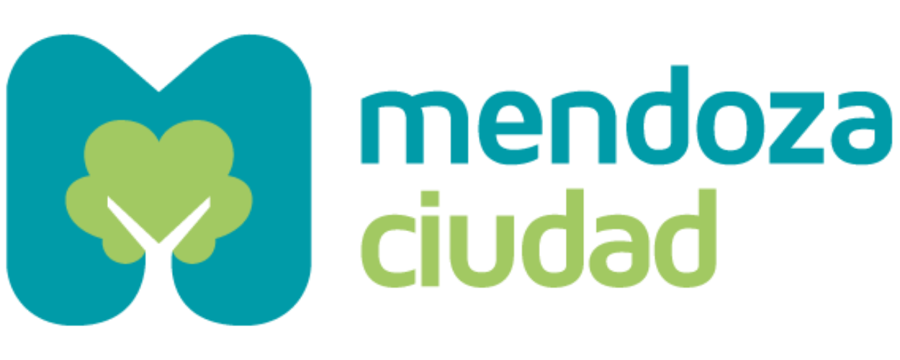

Datasets abiertos
+0
disponibles al público

Creamos herramientas basadas en datos, inteligencia artificial, sensores y plataformas digitales para anticipar necesidades, resolver problemas y construir una ciudad más sostenible.
27+
Reconocimientos internacionales
llevando la ciudad de mendoza al mundo.


Impulsamos una gestión municipal que utiliza información real para
comprender desafíos, diseñar respuestas y evaluar resultados.
A partir del análisis de datos, la innovación y el desarrollo
tecnológico, creamos productos que mejoran tanto los procesos
internos de la administración como la experiencia cotidiana de la
ciudadanía.
Datos abiertos y participación ciudadana
Diseñamos plataformas, aplicaciones y herramientas web que simplifican trámites, conectan servicios y mejoran la experiencia de quienes interactúan con el municipio.
Transformamos datos reales en información clara para acompañar la toma de decisiones.
Aplicamos inteligencia artificial y automatización para agilizar consultas, clasificar solicitudes y facilitar el acceso a servicios municipales.
El Estado publica de forma activa la información sobre su gestión, presupuesto y decisiones, para que cualquier persona pueda acceder a ella sin pedir permiso.
Las decisiones públicas se construyen con la ciudadanía, habilitando canales concretos de consulta, debate y co-creación de políticas.
Organizaciones, academia y sector privado trabajan junto al Estado para resolver problemas públicos de manera conjunta y sostenida.
membresías
04
reconocimientos
06
cooperaciones
07